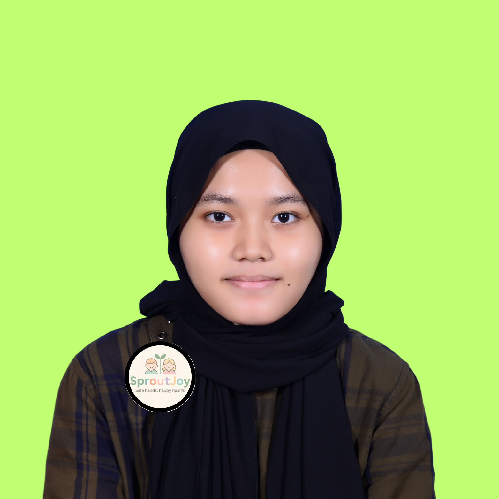

MEET OUR TEAM


Mr. Nuaim
Owner & Principal
Hi, I’m Mr. Nuaim. I hold a Diploma in Early Childhood Education and am a Certified Daycare Administrator. I started SproutJoy because I saw how difficult it was for working mothers to find quality childcare they could truly trust. I believe that every child deserves a safe, warm place to grow and discover their strengths. That’s why I’m dedicated to creating a loving environment where children feel happy and parents feel at ease. I’m known for staying calm even in challenging situations and always giving my full heart to every child under our care.

Ms. Shalihah Hanaan
Manager
Hello, I’m Ms. Shalihah. I hold a Bachelor’s degree in Business Administration and am certified in Childcare Management and Safety. I believe that organizing a daycare is like creating a beautiful rhythm and of course everyone plays their part with love. I’m known for being organized, approachable, and always ready to solve problems with a smile. I especially love planning our weekly themed activities, like Under the Sea Week and Mini Gardeners Day, to make every day exciting for our little ones.
Ms. Anis Shazleen
Lead Teacher
Hi there, I’m Ms. Anis, your child’s Lead Teacher here at SproutJoy. I hold a Bachelor’s degree in Early Childhood Education and I’m First Aid certified. My teaching philosophy is simple: Children learn best when they feel loved, safe, and heard. I’m creative, patient, and passionate about making learning fun and meaningful. I also play the guitar and love leading sing-along sessions during circle time and it’s the best part of my day.

Ms. Balqis Nabila
Assistant Teacher
Hey, I’m Ms. Balqis. I have a Certificate in Early Childhood Care and I’m currently pursuing my Diploma in Education. For me, a child’s smile is the best reward after a long day. I’m gentle, cheerful, and full of energy when it comes to engaging with the children. I especially enjoy storytelling with hand puppets to bring stories to life and keep the children’s imaginations growing.

Ms. Farah Aqilah
Admin & Marketing
Hello, I’m Ms. Farah, the person behind our website posts and communication. I hold a Diploma in Marketing and Communications. I believe that sharing our daycare stories helps parents feel part of our big family. I’m friendly, creative, and love capturing candid moments of our children’s activities to share with you. I also design all our daycare posters and updates to keep you connected with everything happening here at SproutJoy.